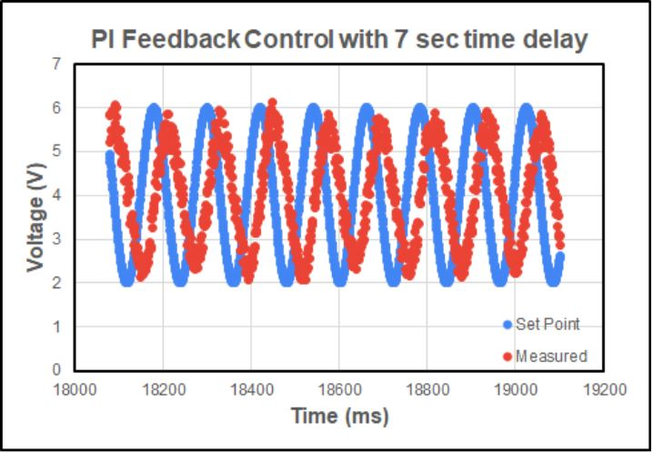
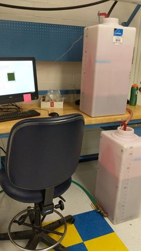
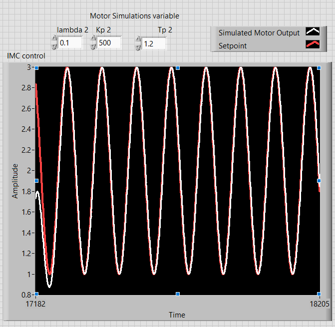
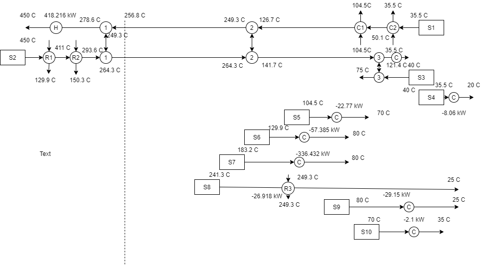

PI vs. IMC-PI Controller Project
- Coded PI and IMC-PI control algorithms in NI LabView to control the speed of a small motor
- Compared the response of the two algorithms to a sinusoidal set point
- Regressed response data to determine tuning parameters
- As part of a group wrote a report on how the two algorithms compared
Water Level Controller Project
- Coded a PI control Algorithm in NI LabView to control the height of a tank that was continously draining
- Used Ziegler Nichols tuning method to find the tuning parameters
- Controlled the tank height to within half an inch


IMC vs. IMC-PI Project
- Implemented IMC and IMC-PI control in LabView
- Controlled a simulated motor
- Wrote a report on the advantages and disadvantages of each algorithm
Pinch Analysis Project
- Wrote a python program capable of performing pinch analysis
- Performed pinch analysis on an example xylene plant
- Created a heat exchanger network and determined the most important node in the network
- As part of a team wrote a report on the findings
